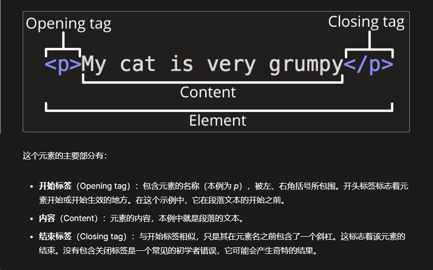
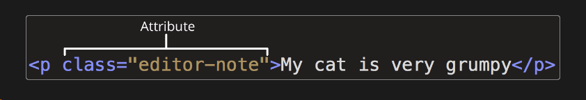

html
目录
HTML（HyperText Markup Language，超文本标记语言）是一种用来告知浏览器如何组织页面的_标记语言_。HTML 可复杂、可简单，一切取决于 web 开发者。HTML 由一系列的元素组成，这些元素可以用来包围或_标记_不同部分的内容，使其以某种方式呈现或者工作。两端的标签可以使内容变成超链接，以连接到另一个页面；使字体表现为斜体等。
html 元素


剖析 HTML 文档
<!doctype html>
<html lang="zh-CN">
<head>
<meta charset="utf-8" />
<title>我的测试站点</title>
</head>
<body>
<p>这是我的页面</p>
</body>
</html>
<!DOCTYPE html>: 声明文档类型。早期的 HTML（大约 1991-1992 年）文档类型声明类似于链接，规定了 HTML 页面必须遵从的良好规则，能自动检测错误和其他有用的东西。文档类型使用类似于这样：HTMLCopy to Clipboard
\<!DOCTYPE html PUBLIC "-//W3C//DTD XHTML 1.0 Transitional//EN" "http://www.w3.org/TR/xhtml1/DTD/xhtml1-transitional.dtd">
文档类型是一个历史遗留问题，需要包含它才能使其他东西正常工作。现在，只需要知道
<!DOCTYPE html>是最短的有效文档声明！<html></html>: \ 元素。这个元素包裹了页面中所有的内容，有时被称为根元素。<head></head>: \ 元素。这个元素是一个容器，它包含了所有你想包含在 HTML 页面中但不在 HTML 页面中显示的内容。这些内容包括你想在搜索结果中出现的关键字和页面描述、CSS 样式、字符集声明等等。以后的章节中会学到更多相关的内容。<meta charset="utf-8">: \ 元素。这个元素代表了不能由其他 HTML 元相关元素表示的元数据，比如 \、\、\